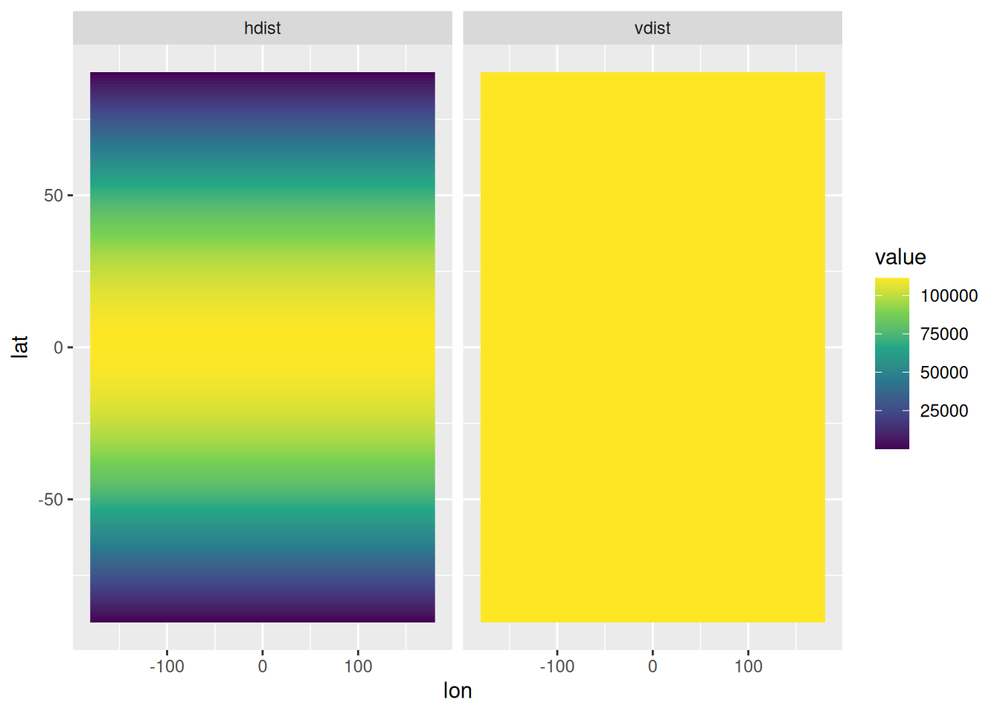

3.2.1 Degrees to Meters (e.g. for raster resolution)
When dealing with Geographic Coordinates (e.g. Lat / Lon), it’s helpful to convert the units to meters to get a feel for the real world distances you are dealing with. Assuming the Earth is a sphere with a circumference of 40’075 km:
1° of latitude distance (i.e. distance in the y direction, towards a pole) is always 111.32 km
A raster resolution of 0.1666667 has a cell height of ~18.5 km (111.32 * 0.1666667)
1° of longitude distance (i.e. distance in the x direction, parallel to the equator) varies, depending on the latitude the following function (from here) approximates it:
\[\text{Length in km of 1° of longitude} = 40075* cos( \text{latitude} ) / 360\]
The functions expects latitude in degrees. The cos function in R expects it in Rad. Implemented in R, the function above is:
Resolutions are often discribed in degrees, minutes and seconds. To convert these into decimal degrees: \[\text{degrees}_\text{decimal} = \text{degrees}+ \frac{\text{minutes}}{60} + \frac{\text{seconds}}{3600}\]
haverstine_distance <-function( lon1, lat1,lon2 = lon1+1, # default: 1 degree in the x-directionlat2 = lat1 # default: 0 degrees in the y-direction ) { R <-6378.137# radius of earth in Km dLat <- (lat2-lat1)*pi/180 dLon <- (lon2-lon1)*pi/180 a <-sin((dLat/2))^2+cos(lat1*pi/180)*cos(lat2*pi/180)*(sin(dLon/2))^2 c <-2*atan2(sqrt(a), sqrt(1-a)) d <- R * creturn (d *1000) # distance in meters}
To convert a raster resolution of 0.166666 to meters with the above function, simply do:
haverstine_distance(0, 45)*0.1666666# at 45 latitude
[1] 13119.04
3.2.2 A (non sensical) experiment:
Visualize the horizontal and the vertical distance at each degree on the globe:
dist_in_deg =1# change to 0.166666 for a raster resolution of this valueexpand.grid(lat =seq(-90, 90, 1), lon =seq(-180, 180, 1)) |>mutate(hdist =haverstine_distance(lon, lat, lon+dist_in_deg, lat),vdist =haverstine_distance(lon, lat, lon, lat+dist_in_deg) ) |>pivot_longer(ends_with("dist")) |>ggplot(aes(lon, lat, fill = value)) +geom_raster() +scale_fill_viridis_c() +facet_wrap(~name)

3.2.3 A second experiment
Horizontal Distance at each latitude for different raster resolutions
Coordinates are just numbers assigned to data. To interprete them, you need to know the Coordinate Reference System (CRS) they are stored in. For spatial data types (geopackage, shapefile, geotiff etc) the CRS is stored in the files metadata. For non spatial data types (e.g. a csv), this information must be stored in a different way. CRS Information can be referenced to with Authority: Code, whereas the most used authority is the European Petrolium Survey Group (EPSG).
To visualize spatial data in 2D (on a screen or on paper), it differs whether the CRS is a projected or a geographic CRS . If its the former, then the coordinates can be used in a Cartesian plane (classic x/y scatter plot type). If its the latter, then it needs to be projected into 2D first. In GIS that focus on visualizing the data constantly, e.g. in ArcGIS or QGIS, this information is stored in the project file. In R or Python, this information must be provided onto the plotting library when visualizing the data explicitly.
Confusingly, the methods of projecting geographic coordinates into 2D is referenced to with the same EPSG Codes as the CRS. So what happens when you have a geographic coordinate system (e.g. WGS84) and you “reproject” it to 2d using EPSG 4326? I’m not sure, but if this SO answer is correct, it might shed some light on the question:
EPSG 4326 (i.e. WGS 84) is not a projection. But if you don’t associate a projection to this geographic coordinate system, and naively render the coordinates as x/y coordinates on a grid, you do get something that is sort of a projection: the pseudo plate carée (equirectangular) projection. (This is not the same as an actual plate carée projection with a WGS 84 GCS, as this would have units in metres, not degrees).
This is all good, but I have trouble understanding this:
To deal with an increasing number of inputs and computation demands, SoilGrids has since 2019 been computed on an equal-area projection. After a thorough comparison, the Homolosine projection was identified as the most efficient in an open source software framework.
The Homolosine projection is not mandatory in any way. The WMS and WCS publish the SoilGrids maps in the following alternative SRSs:
EPSG:4326 - the popular Marinus of Tyre projection (aka Plate Carré) applied on the WGS84 datum. It expands the surface area of the globe by 60%.
3.3.2 S2 library
You need to be careful with geographic CRS when calculating distances, areas or angles, or doing other spatial operations. For example in R (sf), until June 2020, if you a spatial operation on data with a geographic CRS, “you are carrying out an operation that assumes these data lie in a flat plane, where one degree longitude equals one degree latitude, irrespective where you are on the world. This means that your data are assumed implicitly to be projected to the equirectangular projection” (see here). As of version 1.0, sf uses googles s2 library for spatial operations on geographic data. S2 is based on a spherical world: “Although we know that an ellipsoid better approximates the Earths’ shape, computations done with s2 are all on a spere. The difference between ellipsoidal and spherical computations is roughly up to 0.5%”. For areas (in North Carolina or globaly?) it is \(6.4 \times 10^{-5}\).
As an example, consider the polygon from POLYGON((-150 -65, 0 -62, 120 -78, -150 -65)), drawn as a line in this projection
image
S2 geometry assumes that straight lines between points on the globe are not formed by straight lines in the equirectangular projection, but by great circles: the shortest path over the sphere. For the polygon above this would give:
where the light green polygon is the “straight line polygon” in equirectangular. Based on the great circle lines, this polygon now contains the South Pole:
3.3.3 An experiment
To get my head around projections, I did a little experiment in R for the Remote Sensing class. Here’s the uncommented, untidy code… todo: tidy this up, comment it and paste the resulting plots!
# does not seem to work. see https://stackoverflow.com/questions/71038065/accessing-equal-earth-projection-with-sfmymap +coord_sf(crs ="+proj=eqearth +datum=WGS84 +wktext")
# Write the created files to disk for later usewrite_sf(my_circles_filter, "toy_data.gpkg","my_circles_filter")write_sf(world_countries, "natural_earth.gpkg", "world")write_sf(switzerland, "natural_earth.gpkg", "switzerland")
# iterate over all projections, and plot it,# which takes a long timeprojinfo <-sf_proj_info("proj")plot_proj <-function(proji, desc, plot_it =TRUE){ mymap2 +coord_sf(crs = glue::glue("+proj={proji}")) +labs(title = stringr::str_to_title(proji),caption = desc)if(plot_it)ggsave(file.path("projinfo_plots",glue::glue("{proji}.png")),scale =2)}purrr::map2(projinfo$name, projinfo$description, \(proji, desc) tryCatch(plot_proj(proji, desc),error =function(e){e}))